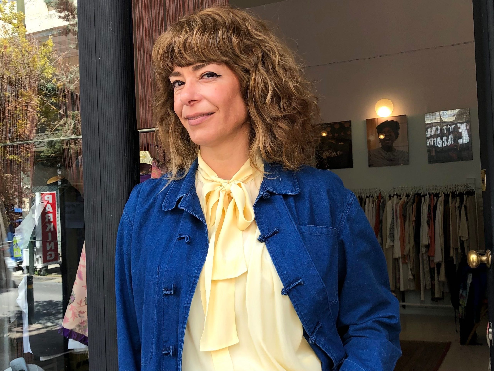

I go thrifting
I start by searching through vintage shops, second-hand rails, fabric leftovers, and forgotten garments, looking for clothes with quality, character, and the potential to become something new.


My love for fashion began at the end of the 1980s, while I was working as a fashion model for Greek designers such as Polatof and Mara Martini. I later studied Fashion Design at the Veloudaki School of Fashion, and my work led me to Paris, where I worked as a personal shopper, as well as to Greek television, where I styled actors for TV series.
I also spent seven years as commercial manager for 22 ZARA Inditex stores. In my free time, I would spend hours in boutiques and thrift shops searching for hidden treasures.
In recent years, the fashion industry has moved closer to sustainability, material recycling, and the personal freedom of style. This is the philosophy I truly believe in and support through my upcycling creations: transforming garments and leftover materials into new pieces with greater quality, artistic value, environmental value, and a new life.
The Process
I start by searching through vintage shops, second-hand rails, fabric leftovers, and forgotten garments, looking for clothes with quality, character, and the potential to become something new.
Back in the atelier, I check the fabric, seams, shape, condition, and original details. This is where I decide what should stay, what should be removed, and what the garment is asking to become.
The piece is cleaned, adjusted, cut, pinned, or reconstructed. I change proportions, crop, soften, sharpen, or combine materials so the garment feels current while keeping its vintage soul.
Embroidery, lace, appliques, belts, buttons, trims, and hand-finished touches bring the piece into the MAdAME KI world. The detail is never random; it gives the garment its attitude.
I test the final piece on the body or mannequin, adjust the balance, and style it with the rest of the collection before it reaches the shop floor.